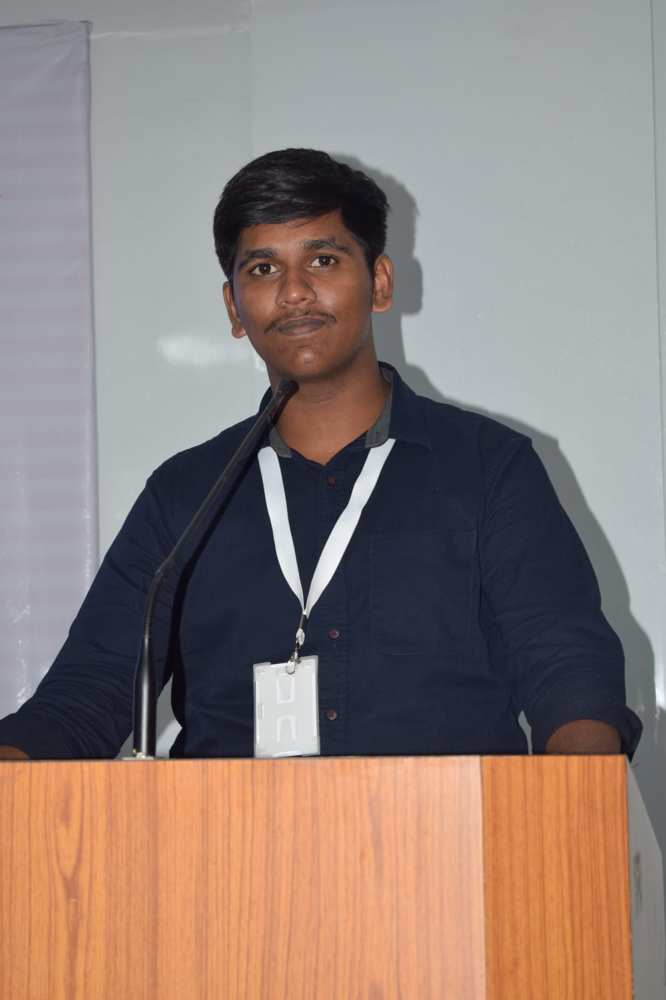

01 / web app
Fairshare
Making shared expenses feel simple.
Expense tracking and balance management for students, roommates and travel groups. Designed the responsive frontend and connected it to backend APIs during my EDUTANTR internship.
Chennai, India · open to opportunities
I’m Thiruselvan P, a BCA student at SRMIST exploring the intersection of thoughtful interfaces, dependable infrastructure and automation.

cloud / devopscurious by default
reliable by design
I like understanding how things fit together — from a clean frontend flow to the Linux process keeping it available. My current focus is growing into cloud and DevOps engineering while staying close to full-stack product work.
Outside the code, I coordinate student events at SRMIST and enjoy the pace of hackathons, collaborative builds and learning in public.
More on LinkedInProjects where I’ve practiced turning a problem into something useful, testable and easier to run.
Making shared expenses feel simple.
Expense tracking and balance management for students, roommates and travel groups. Designed the responsive frontend and connected it to backend APIs during my EDUTANTR internship.
Small automation, dependable habits.
Bash and Cron based compressed backups with Linux permissions and user management — a hands-on exercise in repeatability and data protection.
A secure network, mapped end to end.
Designed a Cisco Packet Tracer topology with departmental VLANs, router-on-a-stick, trunk links, a server and six client PCs.
Bringing the day-to-day into one place.
A management concept covering customers, orders, tailoring measurements, appointments, inventory and payments.
Hands-on learning through internships, projects and shipping with other people.
Skillmate.ai
Supporting deployment and configuration workflows, server maintenance, monitoring, troubleshooting and foundational security checks.
SRMIST Ramapuram
Built the frontend from scratch, shaped the initial MVP and contributed to backend development and database integration in a full-stack team.
EDUTANTR · Remote
Developed the responsive Fairshare frontend and integrated components with backend APIs for a collaborative product.
Codec Technologies
Built a Python password strength checker with regex-based validation, scoring and real-time improvement suggestions.
The tools I’m using to turn curiosity into working systems.
I’m open to internships, collaborative builds and conversations about cloud, DevOps or full-stack development.
offtsp2006@gmail.com